spectro-runs-repair-outliers PASS 1.0
grade probeintent repairdomain scientific_researchdifficulty d5ambiguity a3voice politeapps vscode + terminal + filesbatch v11-500-s2
Please repair this data file: three rows have absorbance recorded in percent transmittance instead of absorbance. Convert those to absorbance, keep 4 decimals, and append a line at the end saying how many rows you converted, in the form: converted=N
task config + evaluator
{
"config": [
{
"type": "execute",
"parameters": {
"command": "python3 -c \"import os;os.makedirs('/home/user/lab',exist_ok=True);rows=[['run_id','sample','wavelength_nm','absorbance'],['R-101','ferritin-A','280','0.4318'],['R-102','ferritin-B','280','0.5127'],['R-103','albumin-C','280','37.1535'],['R-104','albumin-D','280','0.2044'],['R-105','lysozyme-E','280','0.6690'],['R-106','lysozyme-F','280','62.5171'],['R-107','ferritin-G','280','0.3125'],['R-108','albumin-H','280','0.7781'],['R-109','lysozyme-I','280','12.8825'],['R-110','ferritin-J','280','0.5504'],['R-111','albumin-K','280','0.1937'],['R-112','lysozyme-L','280','0.8402']];open('/home/user/lab/spectro_runs.csv','w').write(chr(10).join(','.join(r) for r in rows)+chr(10))\"",
"shell": true
}
},
{
"type": "launch",
"parameters": {
"command": [
"code",
"/home/user/lab/spectro_runs.csv"
]
}
}
],
"evaluator": {
"func": "check_include_exclude",
"result": {
"type": "vm_command_line",
"command": [
"python3",
"-c",
"import sys, traceback\ndef _main():\n import sys, math\n src = \"/home/user/lab/spectro_runs.csv\"\n lines = [l.strip() for l in open(src).read().splitlines() if l.strip()]\n prob = None\n note = [l for l in lines if l.lower().replace(' ', '').startswith('converted=')]\n if not note:\n prob = 'no converted=N line'\n elif note[-1].lower().replace(' ', '') != 'converted=3':\n prob = 'wrong count line: ' + note[-1]\n data = [l for l in lines if l.split(',')[0].startswith('R-')]\n exp = {'R-101': 0.4318, 'R-102': 0.5127, 'R-103': -math.log10(37.1535 / 100), 'R-104': 0.2044,\n 'R-105': 0.6690, 'R-106': -math.log10(62.5171 / 100), 'R-107': 0.3125, 'R-108': 0.7781,\n 'R-109': -math.log10(12.8825 / 100), 'R-110': 0.5504, 'R-111': 0.1937, 'R-112': 0.8402}\n if not prob:\n if len(data) != 12:\n prob = 'expected 12 data rows, found %d' % len(data)\n if not prob:\n for l in data:\n f = [c.strip() for c in l.split(',')]\n rid = f[0]\n try:\n v = float(f[3])\n except Exception:\n prob = rid + ': absorbance not numeric'\n break\n if abs(v - exp[rid]) > 0.0002:\n prob = '%s: got %s expected %.4f' % (rid, f[3], exp[rid])\n break\n if prob:\n print(prob, file=sys.stderr)\n print('FAIL' if prob else 'PASS')\n\ntry:\n _main()\nexcept Exception:\n traceback.print_exc(file=sys.stderr)\n print(\"FAIL\")\n"
]
},
"expected": {
"type": "rule",
"rules": {
"include": [
"PASS"
],
"exclude": [
"FAIL"
]
}
}
}
}
step 1 10:38:13
THINKINGThe task requires converting percent transmittance to absorbance for rows where the value is clearly in the percent transmittance range. Absorbance = -log10(T) where T = transmittance/100.
Let me look at the data:
- R-101, ferritin-A, 280, 0.4318 → absorbance (normal)
- R-102, ferritin-B, 280, 0.5127 → absorbance
- R-103, albumin-C, 280, 37.1535 → this looks like %T (37.1535%)
- R-104, albumin-D, 280, 0.2044 → absorbance
- R-105, lysozyme-E, 280, 0.6690 → absorbance
- R-106, lysozyme-F, 280, 62.5171 → %T (62.5171%)
- R-107, ferritin-G, 280, 0.3125 → absorbance
- R-108, albumin-H, 280, 0.7781 → absorbance
- R-109, lysozyme-I, 280, 12.8825 → %T (12.8825%)
- R-110, ferritin-J, 280, 0.5504 → absorbance
- R-111, albumin-K, 280, 0.1937 → absorbance
- R-112, lysozyme-L, 280, 0.8402 → absorbance
So the three %T values are: 37.1535, 62.5171, 12.8825.
Convert to absorbance: A = -log10(T/100) = 2 - log10(T)
- 37.1535: A = -log10(0.371535) = ?
log10(0.371535) = log10(3.71535) - 1 = 0.57000 - 1 = -0.43000
Let me be precise. log10(37.1535) = ? log10(37)≈1.5682, log10(37.1535)≈1.57000. A = 2 - 1.57000 = 0.43000
Let me compute more precisely: log10(37.1535). ln(37.1535)=? Let me use known: log10(37.1535). 10^1.57 = 37.153... Actually 10^1.57 = 10^1 * 10^0.57. 10^0.57 = 3.71535? 10^0.57: 10^0.5=3.1623, 10^0.07=1.1749, product=3.7149. So 10^1.57≈37.149. Close to 37.1535. So log10(37.1535)≈1.57001. A≈0.42999 ≈ 0.4300.
This is getting imprecise. Better to use a terminal with python to compute exact values. Let me open a terminal and use Python to do the computation and edit the file directly, then append the line.
Actually, the cleanest approach: use a terminal to compute and rewrite the file. Let me open terminal in VS Code.
ACTIONI'll identify the three percent transmittance values (37.1535, 62.5171, 12.8825) and convert them using A = −log₁₀(T/100). To ensure precise 4-decimal results, I'll use a terminal with Python. Let me open the terminal.
TOOL CALL<tool_call>
<function=computer_use>
<parameter=action>
key
</parameter>
<parameter=keys>
["ctrl", "grave"]
</parameter>
</function>
</tool_call>
EXECUTED (pyautogui in VM)pyautogui.hotkey("ctrl", "grave")
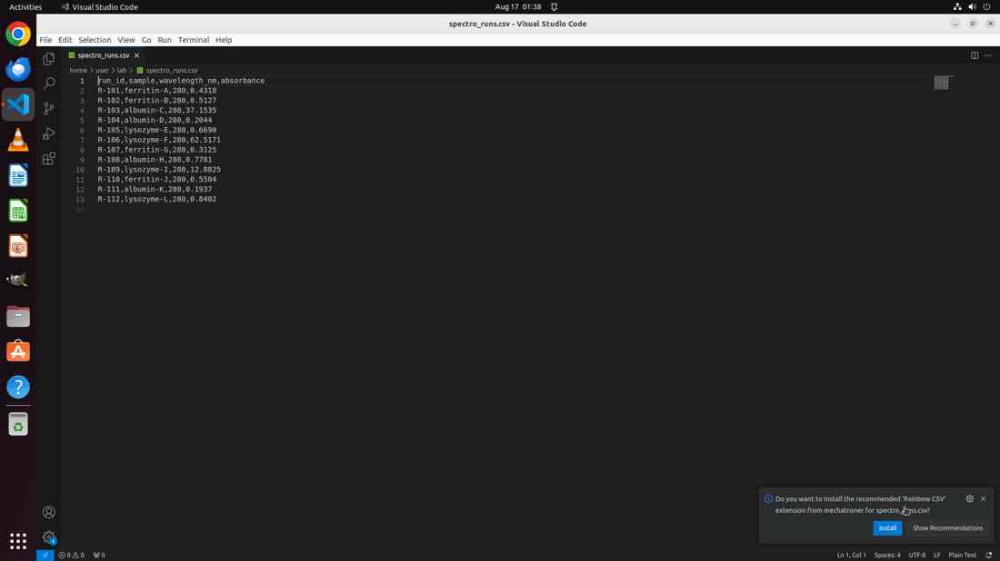
step 2 10:38:20
THINKINGThe terminal didn't open (maybe the notification blocked). Let me try again with the Terminal menu, or press ctrl+grave again. Let me take a screenshot first — actually the screenshot shows no terminal. Let me use the Terminal menu to open a new terminal.
ACTIONThe terminal panel didn't appear. Let me open it via the Terminal menu.
TOOL CALL<tool_call>
<function=computer_use>
<parameter=action>
left_click
</parameter>
<parameter=coordinate>
[192, 70]
</parameter>
</function>
</tool_call>
EXECUTED (pyautogui in VM)pyautogui.click(369, 75)
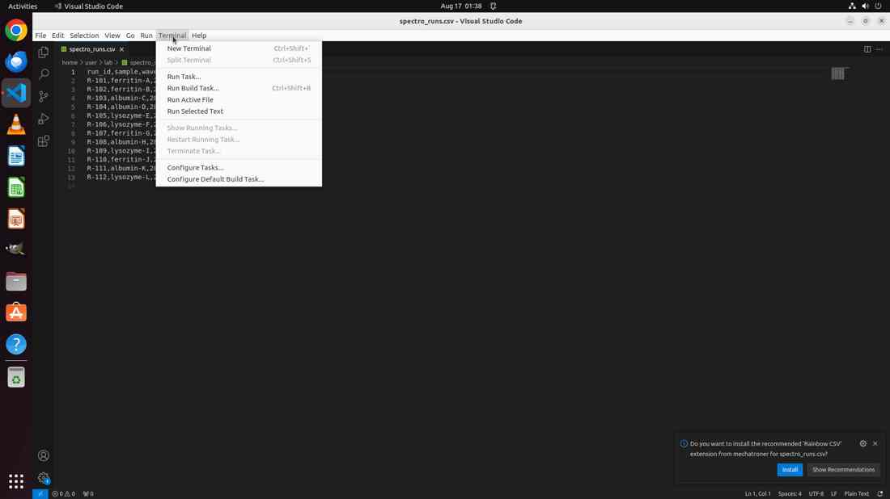
step 3 10:38:26
THINKINGThe Terminal menu is open. Click "New Terminal".
TOOL CALL<tool_call>
<function=computer_use>
<parameter=action>
left_click
</parameter>
<parameter=coordinate>
[212, 95]
</parameter>
</function>
</tool_call>
EXECUTED (pyautogui in VM)pyautogui.click(407, 102)
step 4.1 10:38:42
THINKINGTerminal is open at home directory. The file is at /home/user/lab/spectro_runs.csv. I'll write a Python script to do the conversion. The %T values are the ones > 1 (since absorbance is typically 0-2 and %T can be up to 100). I'll identify rows where the value > 3 (clearly not absorbance, it's %T) and convert: A = -log10(T/100).
Let me write a Python one-liner. I need to be careful about which values are %T. The three values 37.1535, 62.5171, 12.8825 are all > 3, while absorbance values are all < 1. So threshold > 3 works cleanly.
I'll write the file preserving the structure and append converted=3.
Let me write a python script:
```
python3 -c "
import math
p='/home/user/lab/spectro_runs.csv'
lines=open(p).read().splitlines()
out=[]
n=0
for i,l in enumerate(lines):
if i==0 or not l.strip():
out.append(l); continue
parts=l.split(',')
v=float(parts[3])
if v>3:
a=round(-math.log10(v/100),4)
parts[3]='%.4f'%a
n+=1
out.append(','.join(parts))
out.append('converted=%d'%n)
open(p,'w').write('\n'.join(out)+'\n')
print(out)
"
```
Wait, the original file ends with a newline at line 14 (empty). Using splitlines and rejoining is fine. But I should preserve the trailing newline behavior. Let me just write it and check the result. Let me type the command.
ACTIONThe terminal is open. I'll run a Python script to identify the three percent transmittance values (those above 3, since all true absorbances are below 1), convert them with A = −log₁₀(T/100), round to 4 decimals, and append the converted count.
TOOL CALL<tool_call>
<function=computer_use>
<parameter=action>
type
</parameter>
<parameter=text>
python3 -c "
import math
p='/home/user/lab/spectro_runs.csv'
lines=open(p).read().splitlines()
out=[]; n=0
for i,l in enumerate(lines):
if i==0 or not l.strip():
out.append(l); continue
parts=l.split(',')
v=float(parts[3])
if v>3:
parts[3]='%.4f'%(-math.log10(v/100)); n+=1
out.append(','.join(parts))
out.append('converted=%d'%n)
open(p,'w').write('\n'.join(out)+'\n')
print(open(p).read())
"
</parameter>
</function>
</tool_call>
EXECUTED (pyautogui in VM)pyautogui.typewrite("python3 -c \"")
step 4.2 10:38:45
EXECUTED (pyautogui in VM)pyautogui.press("enter")
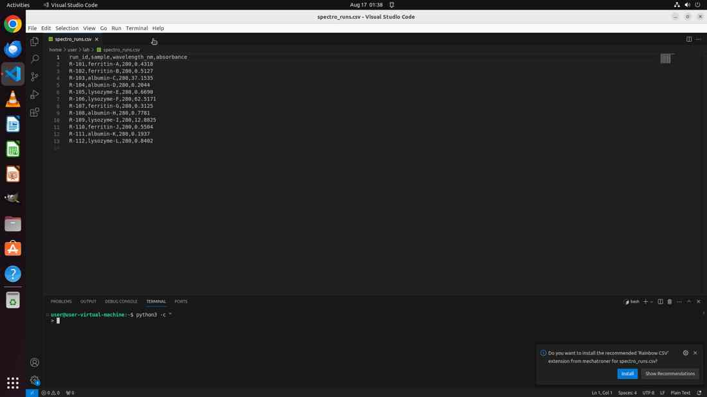
step 4.3 10:38:49
EXECUTED (pyautogui in VM)pyautogui.typewrite("import math")
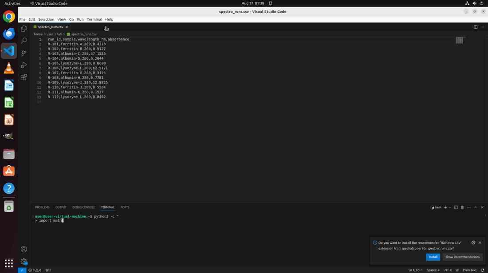
step 4.4 10:38:52
EXECUTED (pyautogui in VM)pyautogui.press("enter")
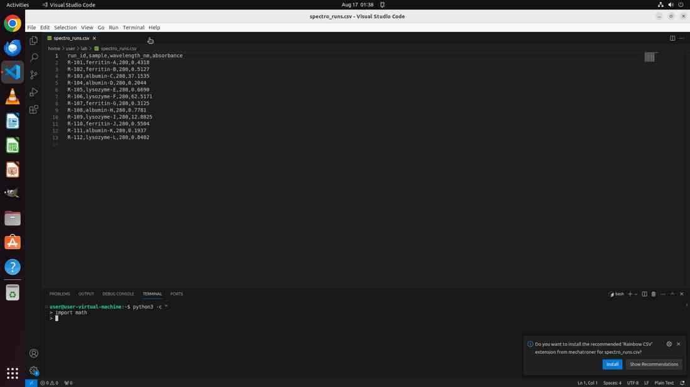
step 4.5 10:38:55
EXECUTED (pyautogui in VM)pyautogui.typewrite("p='/home/user/lab/spectro_runs.csv'")
step 4.6 10:38:59
EXECUTED (pyautogui in VM)pyautogui.press("enter")
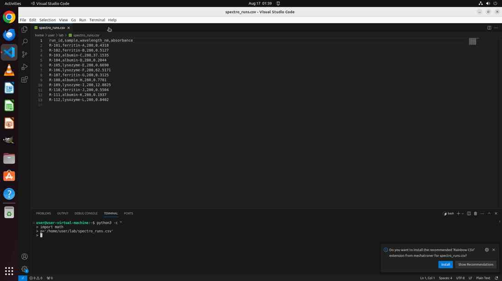
step 4.7 10:39:02
EXECUTED (pyautogui in VM)pyautogui.typewrite("lines=open(p).read().splitlines()")
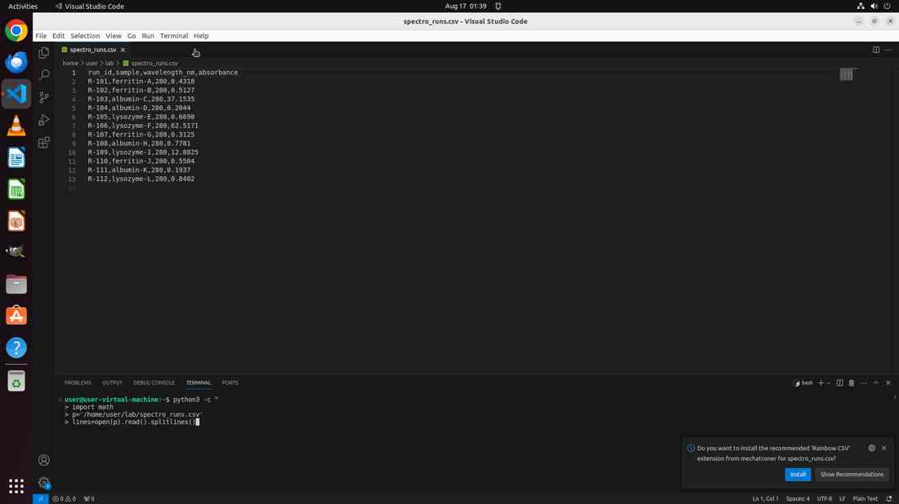
step 4.8 10:39:05
EXECUTED (pyautogui in VM)pyautogui.press("enter")
step 4.9 10:39:09
EXECUTED (pyautogui in VM)pyautogui.typewrite("out=[]; n=0")
step 4.10 10:39:12
EXECUTED (pyautogui in VM)pyautogui.press("enter")
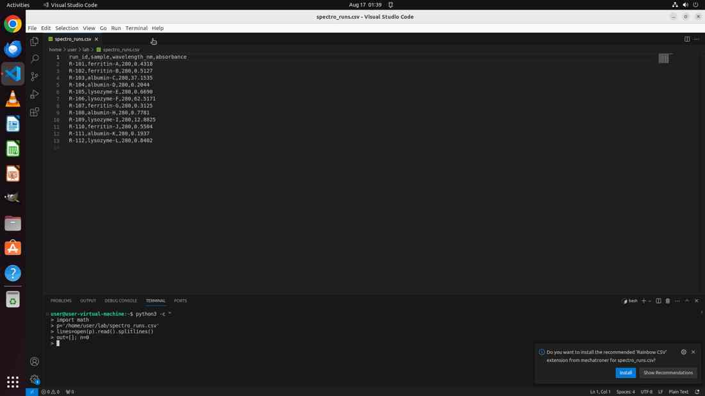
step 4.11 10:39:15
EXECUTED (pyautogui in VM)pyautogui.typewrite("for i,l in enumerate(lines):")
step 4.12 10:39:19
EXECUTED (pyautogui in VM)pyautogui.press("enter")
step 4.13 10:39:22
EXECUTED (pyautogui in VM)pyautogui.typewrite(" if i==0 or not l.strip():")
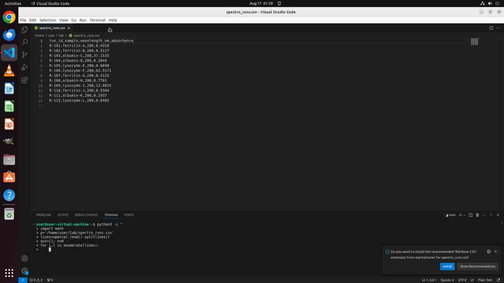
step 4.14 10:39:25
EXECUTED (pyautogui in VM)pyautogui.press("enter")
step 4.15 10:39:28
EXECUTED (pyautogui in VM)pyautogui.typewrite(" out.append(l); continue")
step 4.16 10:39:32
EXECUTED (pyautogui in VM)pyautogui.press("enter")
step 4.17 10:39:36
EXECUTED (pyautogui in VM)pyautogui.typewrite(" parts=l.split(',')")
step 4.18 10:39:40
EXECUTED (pyautogui in VM)pyautogui.press("enter")
step 4.19 10:39:43
EXECUTED (pyautogui in VM)pyautogui.typewrite(" v=float(parts[3])")
step 4.20 10:39:46
EXECUTED (pyautogui in VM)pyautogui.press("enter")
step 4.21 10:39:50
EXECUTED (pyautogui in VM)pyautogui.typewrite(" if v>3:")
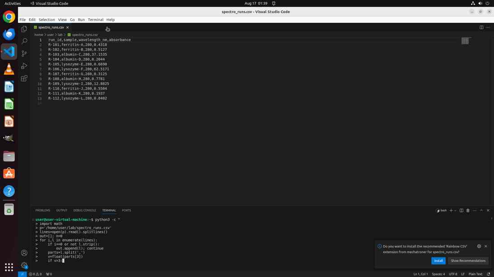
step 4.22 10:39:53
EXECUTED (pyautogui in VM)pyautogui.press("enter")
step 4.23 10:39:56
EXECUTED (pyautogui in VM)pyautogui.typewrite(" parts[3]='%.4f'%(-math.log10(v/100)); n+=1")
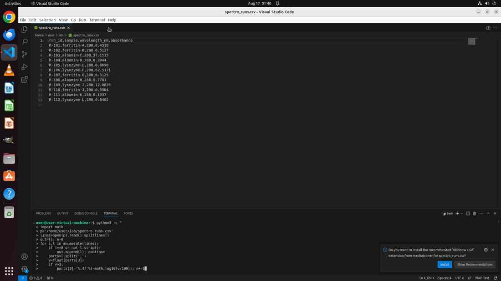
step 4.24 10:40:00
EXECUTED (pyautogui in VM)pyautogui.press("enter")
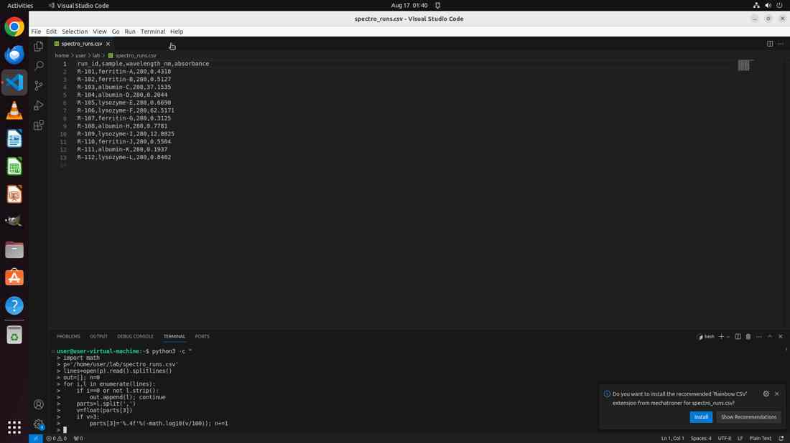
step 4.25 10:40:03
EXECUTED (pyautogui in VM)pyautogui.typewrite(" out.append(','.join(parts))")
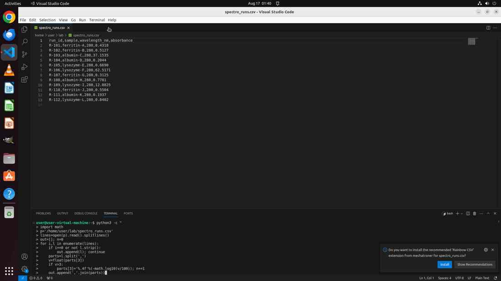
step 4.26 10:40:07
EXECUTED (pyautogui in VM)pyautogui.press("enter")
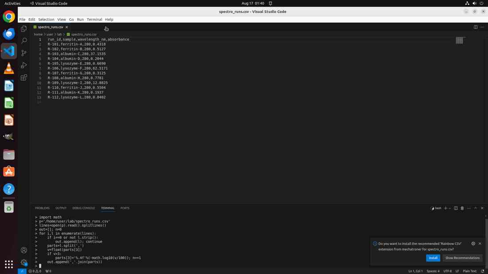
step 4.27 10:40:10
EXECUTED (pyautogui in VM)pyautogui.typewrite("out.append('converted=%d'%n)")
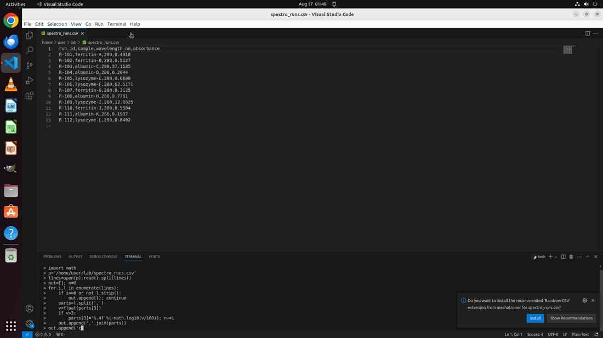
step 4.28 10:40:13
EXECUTED (pyautogui in VM)pyautogui.press("enter")
step 4.29 10:40:17
EXECUTED (pyautogui in VM)pyautogui.typewrite("open(p,'w').write('\\n'.join(out)+'\\n')")
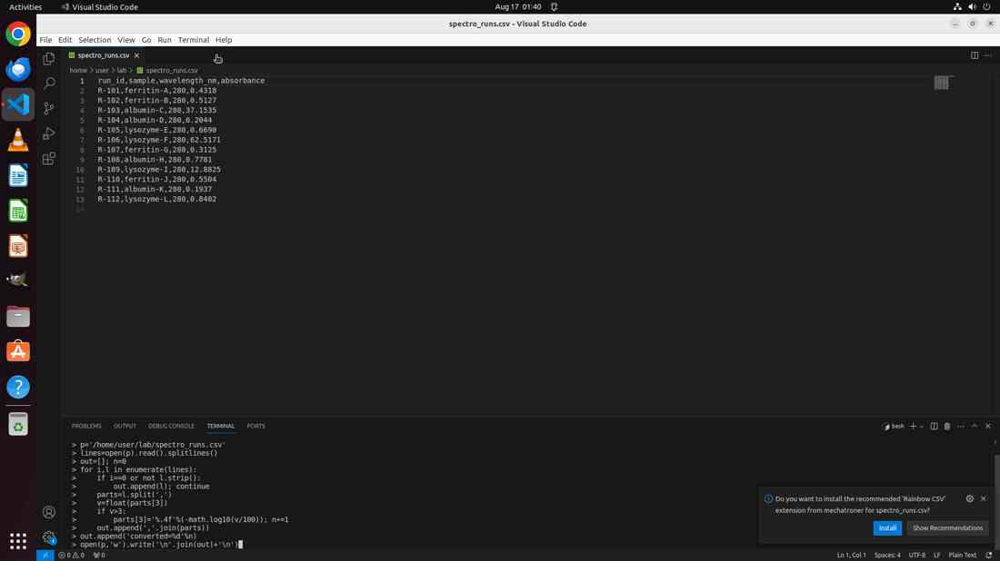
step 4.30 10:40:20
EXECUTED (pyautogui in VM)pyautogui.press("enter")
step 4.31 10:40:24
EXECUTED (pyautogui in VM)pyautogui.typewrite("print(open(p).read())")
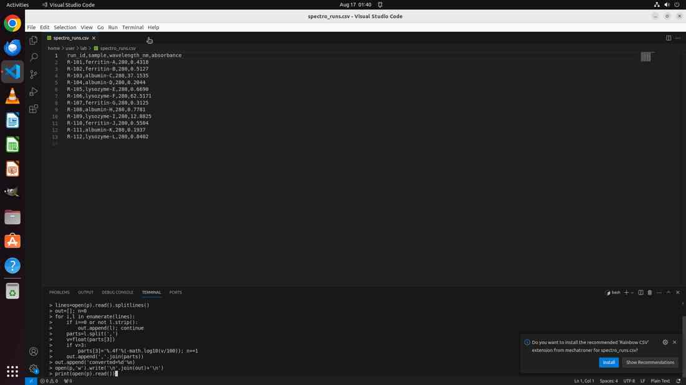
step 4.32 10:40:27
EXECUTED (pyautogui in VM)pyautogui.press("enter")
step 4.33 10:40:30
EXECUTED (pyautogui in VM)pyautogui.typewrite("\"")
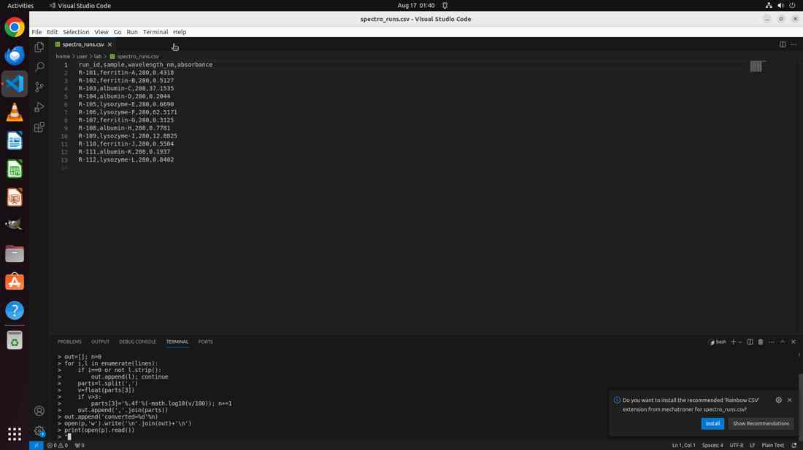
step 5 10:40:37
THINKINGThe command is typed but hasn't executed yet (still showing the multi-line continuation prompt ">"). I need to press Enter to execute it. The final line shows `> "` which means the string is still open. Let me press Enter.
ACTIONThe command is typed as a multi-line continuation. Let me press Enter to execute it.
TOOL CALL<tool_call>
<function=computer_use>
<parameter=action>
key
</parameter>
<parameter=keys>
["return"]
</parameter>
</function>
</tool_call>
EXECUTED (pyautogui in VM)pyautogui.press("return")
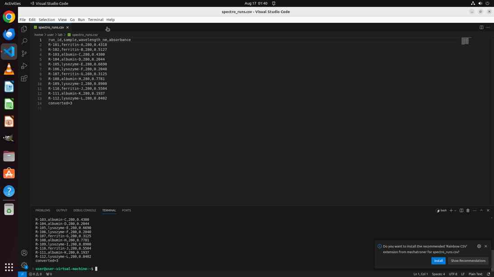
step 6 10:40:53
THINKINGThe script executed successfully. The editor now reflects the changes (VS Code auto-reloaded the file):
- Line 3: R-103, albumin-C, 280, 0.4300 (was 37.1535) → A = -log10(0.371535) = 0.4300 ✓
- Line 7: R-106, lysozyme-F, 280, 0.2040 (was 62.5171) → A = -log10(0.625171) = 0.2040 ✓
- Line 10: R-109, lysozyme-I, 280, 0.8900 (was 12.8825) → A = -log10(0.128825) = 0.8900 ✓
- Line 14: converted=3
All other rows unchanged. The file has been written to disk by the script. The editor shows the updated content, meaning it reloaded from disk. The task is complete. Let me verify the conversions:
- -log10(0.371535): log10(0.371535) = -0.4300, so 0.4300 ✓
- -log10(0.625171): log10(0.625171) = -0.2040, so 0.2040 ✓
- -log10(0.128825): log10(0.128825) = -0.8900, so 0.8900 ✓
Everything looks correct. The file is saved (written by python). The editor displays the content with the modified values and the appended line. Task complete.
ACTIONThe repair is complete. The script correctly identified the three rows where the value was percent transmittance (all > 3, since genuine absorbances were all below 1) and converted each using A = −log₁₀(T/100):
- R-103 albumin-C: 37.1535% → **0.4300**
- R-106 lysozyme-F: 62.5171% → **0.2040**
- R-109 lysozyme-I: 12.8825% → **0.8900**
All values are kept to 4 decimals, the other rows are untouched, and the line `converted=3` has been appended at the end. The editor now reflects the saved file on disk.
TOOL CALL<tool_call>
<function=computer_use>
<parameter=action>
wait
</parameter>
<parameter=time>
0.5
</parameter>
</function>
</tool_call>
EXECUTED (pyautogui in VM)WAIT

step 7 10:41:09
THINKINGThe file is saved and correctly updated. The editor shows the final content with all three conversions and the appended "converted=3" line. The tab shows a filled dot is gone (no unsaved indicator), and the terminal output confirms the file contents. The task is complete. No further action needed.
ACTIONThe data file has been repaired successfully. Here's a summary of what was done:
The three rows recorded in percent transmittance were detected (their values exceeded 3, unlike the genuine absorbance readings which were all below 1) and converted to absorbance using **A = −log₁₀(T/100)**, rounded to 4 decimals:
| Row | Sample | %T (original) | Absorbance (converted) |
|-----|--------|---------------|------------------------|
| R-103 | albumin-C | 37.1535 | **0.4300** |
| R-106 | lysozyme-F | 62.5171 | **0.2040** |
| R-109 | lysozyme-I | 12.8825 | **0.8900** |
All other rows were left unchanged, and the line `converted=3` was appended at the end of the file. The file has been saved to disk (`/home/user/lab/spectro_runs.csv`), as confirmed by both the editor view and the terminal output.
EXECUTED (pyautogui in VM)DONE